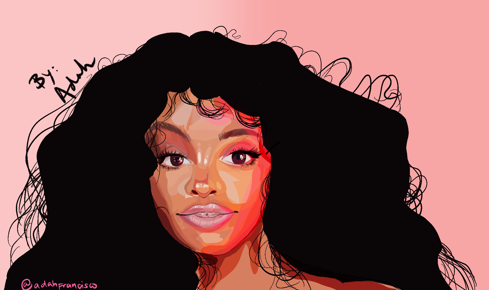

Examples
Everything I have created are with John Scott because he was my Yearbook administrator, I will work on adding more when I receieve the files from him However this is what I have.
Work Examples




123 East Villa Capri Circle
(386)-956-52486
Instagram
Versed in many skills within Graphic Design aspects. Has experience with creating a yearbook and photography for Deltona High School with John Scott. Experienced in using Adobe Suite, specifically Photoshop, InDesign, Lightroom, and Illustrator, as well as Bridge. Completed Highschool and is currently in pursuit of becoming an animator or a storyboard artist. Currently works in Amazon as a warehouse Associate as a Problem Solver, but has experience in food service and customer service as previous occupation. As a student I was an AP student and focused on Graphic Design, fell in love with the process and finsih of the craft of creating something that is pleasing for the eye of consumers
IB Problem Solver | Deltona, FL | October 2020 - Current
Teir 1 Associate | Lake Mary, FL | July 2020 - October 2020
Keke's | Deland, FL | Oct 9th 2020 - April 2020
Everything I have created are with John Scott because he was my Yearbook administrator, I will work on adding more when I receieve the files from him However this is what I have.